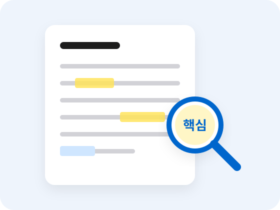

STEP 2
초등 저학년
제대로 읽는 방법을 배우는 단계
수업 시스템
아이의 성장에 따라
아이의 성장에 따라
읽기 교육도 달라져야 합니다.
나비독서는 아이의 학년과 읽기 수준에 맞춰 4단계로 수업합니다.
STEP 2 · 이 단계의 목표
정확하게 읽고 이해하고 기억하는
정확하게 읽고 이해하고 기억하는
기본 읽기 능력을 훈련합니다.
이 단계에서 길러지는 힘
- 글자를 빠뜨리지 않고 정확하게 읽는 힘
- 핵심어를 찾아 의미를 연결하는 힘
- 읽은 내용을 기억하고 다시 떠올리는 힘

PROGRAM
초등 저학년
초등 저학년
핵심 프로그램
초급 한자 어휘력
교과서에 자주 나오는 한자 어휘로 낱말의 뜻을 넓힙니다.
정확하게 읽기
대충 훑지 않고 글자와 문장을 빠짐없이 읽습니다.
핵심어 찾기
문장과 문단에서 가장 중요한 낱말을 찾습니다.
의미 연결
핵심어와 문장을 이어 글의 뜻을 이해합니다.
기억 · 인출
읽은 내용을 기억하고 스스로 다시 떠올립니다.
내용 확인
퀴즈와 질문으로 제대로 이해했는지 확인합니다.
TEXTBOOK
수업 교재
뇌과학 맹모한자 + 나비독서 + 독서 코칭


RECOMMEND